Passionate Urban Planner driving sustainable development and transformative city solutions.
I am a dedicated Urban Planner with over seven years of professional experience in urban and regional planning, specializing in creating sustainable and innovative solutions for modern urban challenges. My expertise spans master planning, infrastructure design, and land use analysis, with a strong focus on integrating community needs, regulatory compliance, and future-ready design principles. I have contributed to transformative projects like the West Marina Concept Master Plan and Sialkot Motorway City, working collaboratively with multidisciplinary teams to deliver impactful urban designs.
Currently, as an Urban Planner at Surbana Jurong Infrastructure Pte Ltd, I play a key role in developing comprehensive urban plans and infrastructure solutions, ensuring alignment with client goals and sustainable development practices. I excel in project coordination, research, and the application of advanced tools like GIS and 3D CAD to craft detailed layout plans and visionary urban concepts. My commitment to excellence is further reflected in my academic background, industry memberships, and continuous professional development through specialized training programs.
My passion lies in building vibrant, sustainable communities that prioritize livability and resilience. With a strong foundation in urban planning principles and a forward-thinking approach, I aim to contribute to the evolution of urban environments, addressing modern challenges with innovative solutions. I am driven by the belief that thoughtful urban design has the power to improve lives and create lasting impacts on society.
My Skill Set
Software Skills
My Professional Skills & Training!
Foundation of Project Management
Google/Coursera
Quality of Life: Liveability in Future Cities
EDX/Coursera
Artificial Intelligence in Urban Mobility
Urban Mobility Academy
Leadership for Professionals and Engineers
EDX
Urban Biodiversity
WRI Urban Shift
3D CAD Application
Coursera/National Taiwan University
The Past, Present, and Future of Urban Life
EDX/Coursera
Integrated Urban Planning
WRI Urban Shift City
People, Technology, and the Future of Mobility
Coursera/Michigan University
Socially Responsible Real Estate Development
LinkedIn Learning
Circular Economy Strategies for Sustainable Development
WRI Urban Shift
Socially Responsible Real Estate Development
Alison
My key areas of services.
I have over seven years of experience in urban and regional planning, with a strong focus on sustainable development, master planning, and innovative infrastructure design. My expertise integrates technical knowledge, community-focused solutions, and regulatory compliance, delivering impactful results in modern urban environments.
Urban Planning
Expertise in creating detailed master plans and layout designs for residential and commercial communities, ensuring compliance with zoning regulations and local development standards. Projects include West Marina Concept Master Plan and Sialkot Motorway City.
Project Coordination
Extensive experience collaborating with multidisciplinary teams, including architects, engineers, and stakeholders, to meet project objectives. Successfully coordinated tasks for major projects like Urban City Concept Plan and Al-Hafeez Garden Phases I-V.
GIS and Spatial Analysis
Skilled in GIS tools and spatial database management to analyze land use, optimize infrastructure layouts, and develop data-driven urban solutions for sustainable growth. Demonstrated in projects like Fazaia Housing Scheme Kamra City.
Research & Development
Conducted research and development to create visionary concepts for urban planning, integrating community needs and sustainability. Published works include Urban Growth Management in Pakistan and contributions to Capital Development Authority-funded studies.
Check Out My Projects!

M1 Project Private Development in Kingdom of Saudi Arabia
This private land project in Saudi Arabia merges biophilic design with precision urban planning, transforming an existing ecological matrix of native flora, pollinators, and avifauna into a curated human-scale sanctuary. Rooted in Japanese principles of ma (negative space) and shizen (naturalness), the design dissolves the boundary between the built and natural world — choreographing visual vibrancy, fragrance corridors, and natural soundscapes as deliberate planning outcomes. This is not landscaping. This is urban design at its most intimate scale. Role: Assistant to Design Manager → Open the document to see how strategic land use, ecological sensitivity, and spatial poetry were woven into a single private development.
Check More Details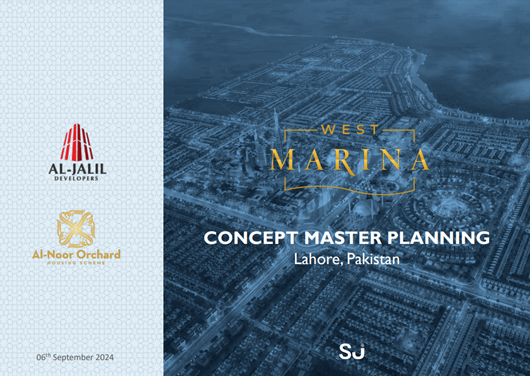
Concept Master Plan & Detailed Infrastructure Plan | West Marina Project | Client: Al Jalil Developers
Commissioned by Al Jalil Developers and delivered with a Singaporean design team, West Marina demanded the full spectrum of urban planning expertise from strategic land use thinking to the last meter of infrastructure routing. Master Planning Mixed-use township framework balancing density, open space, mobility, and community anchors within the region's environmental and cultural context. Infrastructure Planning Utility networks, road hierarchies, drainage, and service corridors engineered for long-term efficiency and phased delivery. Landscape Strategy Green corridors, indigenous planting, and waterfront parkland integrated to reinforce ecological sustainability and livability. Waterfront Design A destination public realm where placemaking, recreation, and landscape infrastructure converge at the water's edge. Four disciplines. One coherent vision. Built with precision. Open the document to explore the full planning framework behind one of the region's most ambitious mixed-use townships.
Check More Details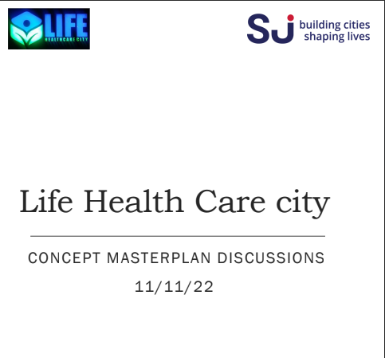
Concept Master Plan & Detailed Layout Plan | Sialkot Motorway City | Client: MAZ Developers
Sialkot Pakistan's global export hub had long outgrown its urban boundaries. Sialkot Motorway City was the structured response: a future-ready planned community designed to capture the city's growth momentum at the Sialkot-Lahore Motorway corridor. Master Planning 1,096-acre mixed-use framework distributing residential, commercial, and mixed-use zones to maximize accessibility, investment value, and long-term growth. Connectivity Planning Road hierarchy and circulation network leveraging direct motorway access for seamless internal and regional mobility. Layout Planning Plot-level plans defining street widths, block configurations, setbacks, and parcellation to regulatory approval standard. Community Framework Open spaces, neighborhood centers, and green buffers balancing density with quality of life. A blueprint that doesn't just respond to today's demand it anticipates the next two decades. Role: Assistant to Project Manager Open the document to explore the master planning strategy and connectivity framework behind Sialkot Motorway City.
Check More Details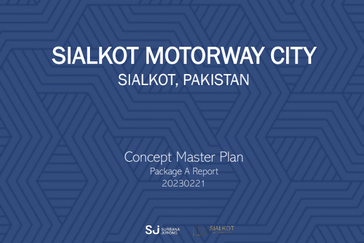
Concept Master Plan & Detailed Layout Plan | Urban City Lahore | Client: Al-Hafeez & Al-Rehman Developers
With dual client ownership and a thousand acres of mixed-use development to coordinate, Urban City Lahore demanded more than technical competency it required translating competing priorities and complex land use demands into a single, buildable urban framework. Master Planning Unified 1,000 acre development vision integrating residential, commercial, and recreational corridors for sustainable, livable growth. Land Use & Zoning Balanced framework distributing density, open space, and mixed-use zones where each district functions independently yet contributes to the whole. Layout Planning Plot-level plans defining block structures, street hierarchies, setbacks, and parcel configurations to regulatory-ready standard. Community Planning Parks, civic spaces, and neighborhood anchors embedded throughout to foster identity, interaction, and long-term well-being. Multi-Stakeholder Coordination Planning process aligned across two developer clients, balancing commercial objectives with design intent at every stage. 1,000 acres planned with purpose block by block, street by street. Open the document to explore the full planning framework and layout logic behind Urban City Lahore.
Check More Details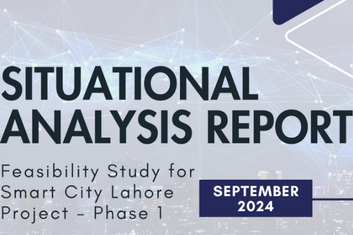
Feasibility Study of Lahore Smart City (Phase-1) | Client: Government of Punjab & Punjab IT Board
13 million people. One city. A study that had to get it right. Commissioned by the Government of Punjab and Punjab IT Board, this multi-dimensional feasibility study went beyond situational overview delivering a rigorous diagnostic and strategic blueprint for one of South Asia's most complex urban transformation challenges. Urban Diagnostic Mapping infrastructure deficits, mobility breakdowns, energy inefficiencies, and governance gaps across Lahore's existing urban system. Technology & IoT Assessment Evaluating smart infrastructure readiness across utilities, sensor networks, and data-driven public service delivery. Mobility Planning Modeling intelligent traffic management, multimodal connectivity, and last-mile integration strategies. Financial Viability Cost-benefit modeling and phased investment frameworks ensuring the vision was financially grounded, not just technologically aspirational. Environmental & Social Impact Assessing carbon reduction potential and social equity outcomes across all income groups. Implementation Roadmap Phase-by-phase delivery strategy giving government stakeholders a clear pathway from feasibility to ground-breaking. Not just a report the strategic foundation for a billion-dollar urban transformation. Open the document to explore the full diagnostic framework and roadmap behind Lahore's smart city initiative.
Check More Details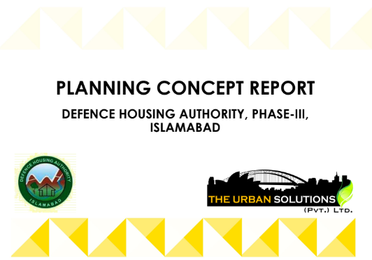
Planning Concept Report | DHA Phase-III Islamabad | Client: Defence Housing Authority
DHA Phase-III Islamabad demanded planning precision at the highest institutional level within Islamabad's master-planned landscape, CDA regulatory framework, and the uncompromising expectations of Pakistan's Defence Housing Authority. Concept Development Land use structure, residential typology, commercial nodes, and open space strategy defined within Islamabad's strict environmental and regulatory constraints. Contextual Integration Site analysis ensuring full harmony with Islamabad's topography, urban fabric, and Capital Development Authority regulations. Community Planning Phased residential framework with considered street hierarchies, neighbourhood scales, and civic amenity placement befitting a premium DHA community. Mixed-Use Structuring Commercial corridors positioned to serve internal needs and city-level accessibility without compromising residential character. Report Preparation Formally structured Planning Concept Report meeting the rigorous documentation standards of institutional client review. Every decision documented. Every space justified. Built to last. Open the document to explore the planning framework and spatial vision behind one of Pakistan's most prestigious institutional residential projects.
Check More Details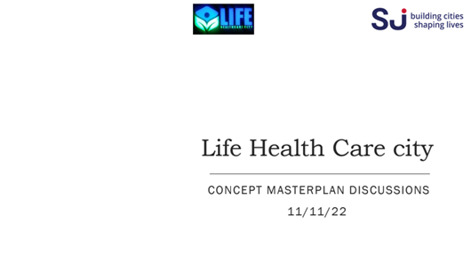
Concept Master Plan & Detailed Urban Design | Life Health Care City
Not a city that houses a healthcare system a city that becomes one. A fully integrated urban ecosystem where medical excellence, residential living, and restorative landscape function as one indivisible whole planned street by street, space by space, around human health. Open the document to explore how urban planning and healthcare strategy were unified into a single visionary framework.
Check More Details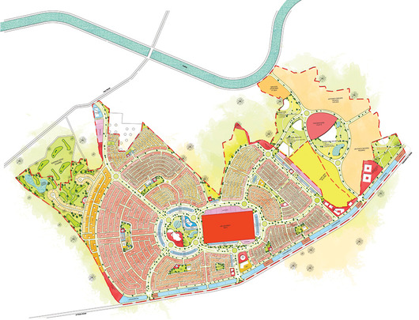
Master Planinng of Aviation City in Kamra | Client; Pak Fazaia
The Master Plan of Fazaia Housing Scheme provides clear direction for future enhancement of the sectors, both in the form of defined strategic directions and actions, and through the preparation of a site master plan for each sector. Those factors which influence the sectors have been analysed and key issues identified. These have been grouped into four categories: sectors, Living Collection and Interpretation, Visitor Facilities and Services, and Linkages.
Check More Details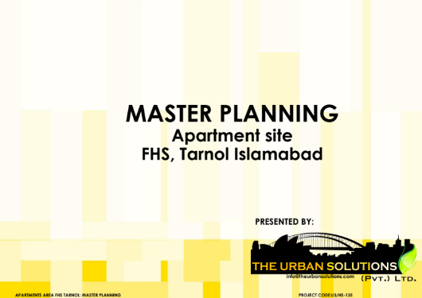
Master Planning Report Fazaia Housing Scheme Aviation City Kamra
The preparation of a masterplan of Fazaia housing Scheme identified in the Kamra which highlighted the potential of the estate to accommodate additional housing for an aging population, consistent with State and local government planning objectives. This report describes the existing site conditions and context, addresses the relevant State and local planning considerations, explains the Masterplan prepared by The Urban Solutions and identifies planning actions for its implementation.
Check More Details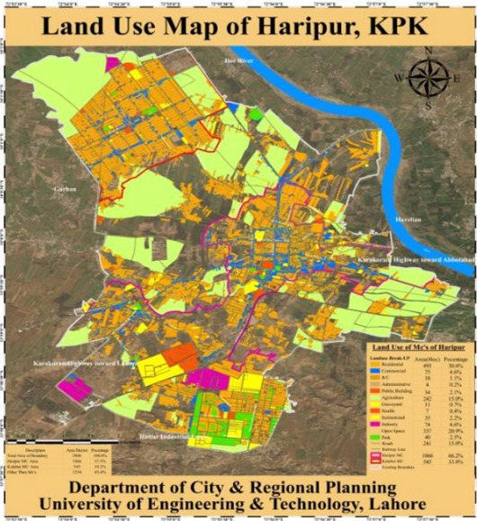
Master Plan of Hari Pur City | Client; Hari Pur Town Municiple Administration
A city finding its boundaries. A master plan giving it direction. Led as Group Leader, this evidence-based master plan established a comprehensive development blueprint for Hari Pur translating field survey data into a structured spatial vision for long-term, responsible urban growth. Growth Boundary Definition Data driven city limits containing sprawl and directing development toward planned corridors. Survey Consolidation Leading collection and synthesis of comprehensive site data as the foundation for all planning decisions. Land Use Framework — Residential, commercial, civic, and open space zones distributed against existing demand and projected growth. Infrastructure Planning Road hierarchies, utility corridors, and service networks supporting phased urban expansion. From raw survey data to a city with a future. Open the document to explore the master planning framework and urban growth strategy for Hari Pur City.
Check More Details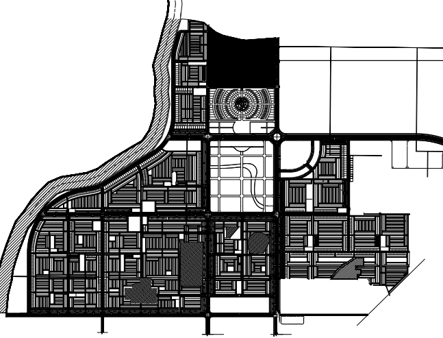
West Marina Project Horticulture Plan
The West Marina project is a large-scale residential township aimed at creating an integrated, sustainable, and aesthetically appealing living environment. The project focuses on ensuring a balance between modern infrastructure and ecological sustainability by incorporating extensive landscaping and horticulture planning. The design emphasizes green spaces, efficient land utilization, and the inclusion of indigenous plant species to promote environmental well-being and enhance the township's visual appeal. The project also addresses the unique challenges of integrating green corridors, recreational spaces, and aesthetically landscaped areas into urban settings.
Check More Details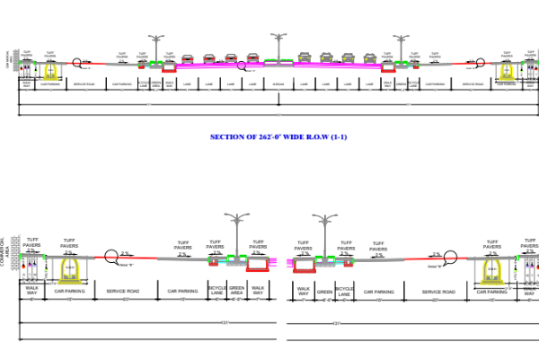
Project Name West Marina Infrastructure Design Client Name | Al Jalil Developers
3,000 acres of urban ambition engineered from the ground up. Infrastructure is the invisible backbone of every great city. For West Marina, delivering a development of this scale demanded a concept infrastructure design that was not only technically comprehensive but strategically aligned with the master plan vision from day one. Utility Networks Integrated water, power, and sewerage systems designed for long-term operational efficiency across the full 3,000-acre township. Road Hierarchy & Circulation Multi-tiered movement network connecting primary arterials to neighborhood streets, optimized for both vehicular flow and pedestrian accessibility. Drainage & Stormwater Comprehensive drainage infrastructure balancing urban runoff management with ecological sustainability. Service Corridors Utility and service routing coordinated across all infrastructure disciplines to minimize conflict and support phased delivery. Where master planning vision meets engineering reality built to serve a city. Open the document to explore the full infrastructure concept design behind West Marina's 3,000-acre township.
Check More Details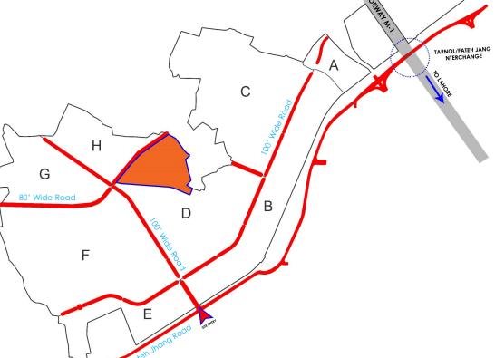
Project Name :Landscape Design West Marina | Client : Al Jalil Developers
Where the city ends and nature begins — by design. At West Marina, landscape was never an afterthought it was the design language that gave 3,000 acres its identity, its character, and its soul. Green Space Framework Interconnected open spaces, recreational parks, and green corridors designed as an urban lung distributing nature equitably across every neighborhood. Streetscape Design — Pedestrian-scaled street environments crafted with shade trees, planting palettes, and hardscape detailing that transform movement corridors into lived experiences. Ecological Integration Indigenous planting strategies and natural drainage features woven into the urban fabric to reinforce environmental sustainability without compromising design quality. Recreational Landscape Parks and open spaces programmed for community activity, social interaction, and passive recreation designed around how people actually live outdoors.3,000 acres where every green space was placed with intention. Open the document to explore the full landscape design vision behind West Marina township.
Check More Details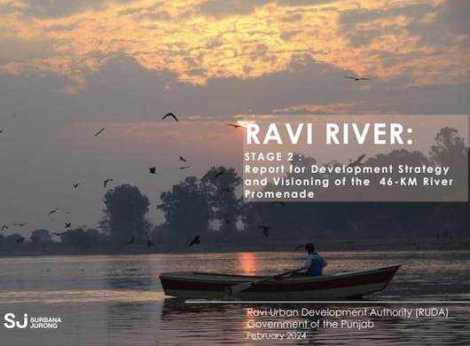
Project Name: River Ravi Development Strategy | Client: Ravi Urban Development Authority
The River Ravi Development Strategy project focuses on shaping a forward-looking planning vision for the river corridor, with emphasis on sustainable land use, environmental enhancement, public realm improvement, and long-term urban resilience. The work explores how strategic planning interventions can strengthen regional connectivity, guide future growth, and unlock the riverfront's potential as a vibrant and functional urban landscape.
Check More Details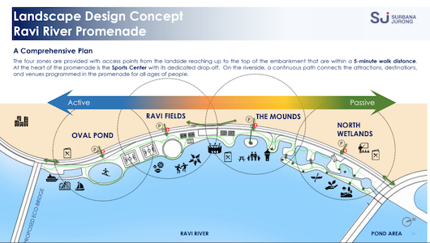
Project name: River Ravi Landscape Design| Client Ravi Urban Development Autority
The River Ravi Landscape Design project envisions an ecologically responsive and visually engaging riverfront environment that balances recreation, open space, and environmental stewardship. The design approach highlights landscape character, pedestrian experience, and the integration of natural systems to create a cohesive public realm that supports both community activity and the long-term health of the river corridor.
Check More Details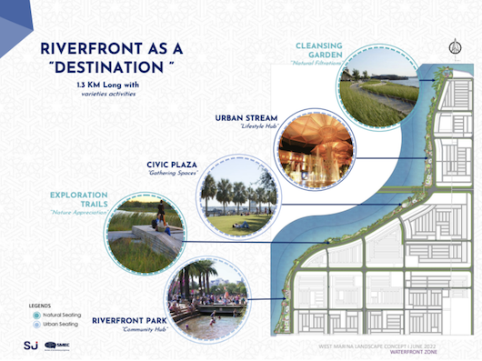
Project name : West Marina Water Front Park| Client name: Al-Jalil Developrs
The West Marina Water Front Park project is conceived as a destination open space that brings together landscape design, public access, and placemaking along the waterfront edge. It focuses on creating an attractive and active park setting through green infrastructure, walkable environments, and thoughtfully designed recreational zones that enhance the user experience while reinforcing the identity of the broader marina development.
Check More DetailsMaster Planning Report Fazaia Housing Scheme Aviation City Kamra | Client name: Pak Fazaia
The preparation of a masterplan of Fazaia housing Scheme identified in the Kamra which highlighted the potential of the estate to accommodate additional housing for an aging population, consistent with State and local government planning objectives. This report describes the existing site conditions and context, addresses the relevant State and local planning considerations, explains the Masterplan prepared by The Urban Solutions and identifies planning actions for its implementation.
Check More Details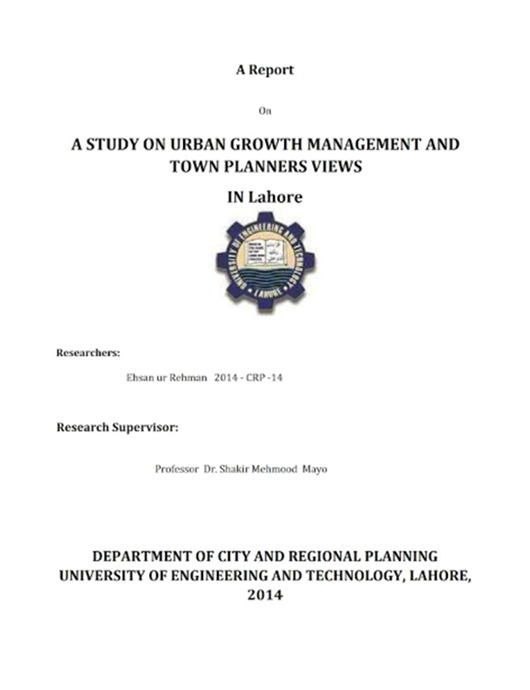
A Report on Urban Growth Management Case Study; Lahore City
It is hard to deal with whatever city has been gotten down to business, The issues of urban development administration in Pakistan require provincial and national level arranging. In any case, lamentably, the second biggest city of Pakistan is managed in parts and there are in excess of one controlling body and every one of them following their claimed composed principles and directions without thinking about the city overall. The framework is enduring a result of the covering of elements of the specialists which result in the wastage of assets and time and toward the end the city and its inhabitants are standing up to numerous issues in light of this erratic improvement.
Check More Details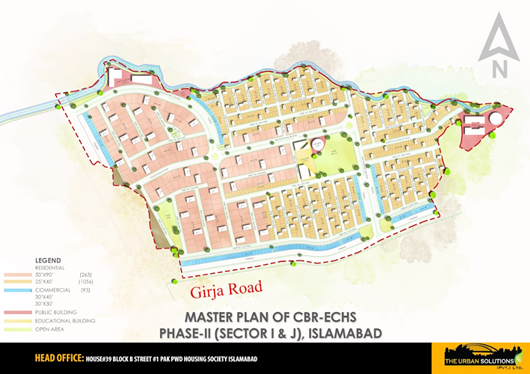
Project Name: Central Board of Revenue Employees Cooperative Housing Scheme| Client name: CBR Executive Board
The Central Board of Revenue Employee Cooperative Housing Society (CBR ECHS) Phase-2 project aimed to develop a comprehensive residential community tailored to the needs of society's members. Spanning 63 acres, this development focused on creating a sustainable, efficient, and community-centered urban environment. The project required meticulous spatial planning, effective land-use allocation, and integration of essential infrastructure to ensure long-term livability and functionality.
Check More Details